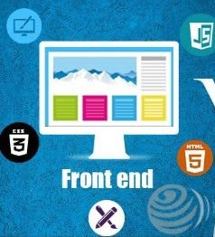

¿Qué es frontend?
Un sistema de front-end es parte de un sistema de información al que el usuario accede directamente e interactua para recibir o utilizar las capacidades de back-end del sistema anfitrión. Permite a los usuarios acceder y solicitar las prestaciones y servicios del sistema de información subyacente.
El sistema de front-end puede ser una aplicación de software o hardware o su combinación, así como recursos de la red.
Optimización de la conversión en el frontend
El front-end de una web es un factor clave para las conversiones. Hay una serie de criterios que se pueden utilizar para optimizar el tipo de conversión en el módulo de acceso:
- -Velocidad de página.
- -Disponibilidad del sitio web.
- -Uso de caché.
- -Diseño de alta calidad de la página de inicio.
- -Uso de sellos de calidad.
- -Uso continuo de imágenes de producto.
- -Disponibilidad de funciones de filtro y búsqueda.
- -Buena guía para el usuario a través de la navegación.
- -Uso de elementos de llamada a la acción.
- -Transferencia de información clara y sencilla.
FUNDAMENTOS DE FRONTEND
Una Aplicación Web, es la integración de una Interfaz HTML orientada al usuario, un diseño CSS inteligente y una funcionalidad Javascript transparente. Actualmente las aplicaciones web son utilizadas para crear plataformas web dónde los usuarios conozcan el negocio en internet navegando desde un navegador web y también los administradores del negocio puedan controlar la plataforma de forma remota, sin embargo, la potencia de las aplicaciones web ha permitido que hoy en día encontremos aplicaciones móviles y videojuegos en las tiendas para IOS y Android basadas completamente en aplicaciones web gracias a proyectos como Apache Cordova, Phonegap, Ionic, NativeScript, Expo, entre otros.